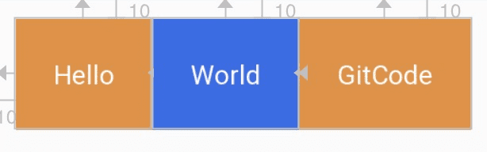
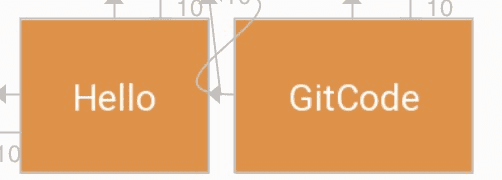

Android系统框架
从进程分层的角度来看，借用Android 操作系统架构开篇中的一张图如下：

Loader层
- Boot ROM: 当手机处于关机状态时，长按Power键开机，引导芯片开始从固化在ROM里的预设代码开始执行，然后加载引导程序到RAM；
- Boot Loader：这是启动Android系统之前的引导程序，主要是检查RAM，初始化硬件参数等功能。
Linux内核层
Android平台的基础是Linux内核，比如ART虚拟机最终调用底层Linux内核来执行功能。Linux内核的安全机制为Android提供相应的保障，也允许设备制造商为内核开发硬件驱动程序。
- 启动Kernel的swapper进程(pid=0)：该进程又称为idle进程, 系统初始化过程Kernel由无到有开创的第一个进程, 用于初始化进程管理、内存管理，加载Display,Camera Driver，Binder Driver等相关工作；
- 启动kthreadd进程（pid=2）：是Linux系统的内核进程，会创建内核工作线程kworkder，软中断线程ksoftirqd，thermal等内核守护进程。kthreadd进程是所有内核进程的鼻祖。
硬件抽象层(HAL)
硬件抽象层 (HAL) 提供标准接口，HAL包含多个库模块，其中每个模块都为特定类型的硬件组件实现一组接口，比如WIFI/蓝牙模块，当框架API请求访问设备硬件时，Android系统将为该硬件加载相应的库模块。
Android Runtime & 系统库
每个应用都在其自己的进程中运行，都有自己的虚拟机实例。ART通过执行DEX文件可在设备运行多个虚拟机，DEX文件是一种专为Android设计的字节码格式文件，经过优化，使用内存很少。ART主要功能包括：预先(AOT)和即时(JIT)编译，优化的垃圾回收(GC)，以及调试相关的支持。
这里的Native系统库主要包括init孵化来的用户空间的守护进程、HAL层以及开机动画等。启动init进程(pid=1)，是Linux系统的用户进程，init进程是所有用户进程的鼻祖。
- init进程会孵化出ueventd、logd、healthd、installd、adbd、lmkd等用户守护进程；
- init进程还启动servicemanager(binder服务管家)、bootanim(开机动画)等重要服务
- init进程孵化出Zygote进程，Zygote进程是Android系统的第一个Java进程(即虚拟机进程)，Zygote是所有Java进程的父进程，Zygote进程本身是由init进程孵化而来的。
Framework层
- Zygote进程，是由init进程通过解析init.rc文件后fork生成的，Zygote进程主要包含：
- 加载ZygoteInit类，注册Zygote Socket服务端套接字
- 加载虚拟机
- 提前加载类preloadClasses
- 提前加载资源preloadResouces
- System Server进程，是由Zygote进程fork而来，System Server是Zygote孵化的第一个进程，System Server负责启动和管理整个Java framework，包含ActivityManager，WindowManager，PackageManager，PowerManager等服务。
- Media Server进程，是由init进程fork而来，负责启动和管理整个C++ framework，包含AudioFlinger，Camera Service等服务。
App层
- Zygote进程孵化出的第一个App进程是Launcher，这是用户看到的桌面App；
- Zygote进程还会创建Browser，Phone，Email等App进程，每个App至少运行在一个进程上。
- 所有的App进程都是由Zygote进程fork生成的。
Syscall && JNI
- Native与Kernel之间有一层系统调用(SysCall)层；
- Java层与Native(C/C++)层之间的纽带JNI。
Android版本
| Code name | Version numbers | Initial release date | API level |
|---|---|---|---|
| No codename | 1.0 | September 23, 2008 | 1 |
| No codename | 1.1 | February 9, 2009 | 2 |
| Cupcake | 1.5 | April 27, 2009 | 3 |
| Donut | 1.6 | September 15, 2009 | 4 |
| Eclair | 2.0 – 2.1 | October 26, 2009 | 5 – 7 |
| Froyo | 2.2 – 2.2.3 | May 20, 2010 | 8 |
| Gingerbread | 2.3 – 2.3.7 | December 6, 2010 | 9 – 10 |
| Honeycomb | 3.0 – 3.2.6 | February 22, 2011 | 11 – 13 |
| Ice Cream Sandwich | 4.0 – 4.0.4 | October 18, 2011 | 14 – 15 |
| Jelly Bean | 4.1 – 4.3.1 | July 9, 2012 | 16 – 18 |
| KitKat | 4.4 – 4.4.4 | October 31, 2013 | 19 – 20 |
| Lollipop | 5.0 – 5.1.1 | November 12, 2014 | 21 – 22 |
| Marshmallow | 6.0 – 6.0.1 | October 5, 2015 | 23 |
| Nougat | 7.0 | August 22, 2016 | 24 |
| Nougat | 7.1.0 – 7.1.2 | October 4, 2016 | 25 |
| Oreo | 8.0 | August 21, 2017 | 26 |
| Oreo | 8.1 | December 5, 2017 | 27 |
| Pie | 9.0 | August 6, 2018 | 28 |
| Android Q(首次不用甜品来命名) | 10.0 | September 3, 2019 | 29 |
Context
Context 一般称呼其为上下文，它是对当前运行环境的一个描述，持有一些必要的资源和环境。Context是一个抽象类，部分继承关系如下：
1 | Context (android.content) |
相关组件的 Context 创建与赋值可见：
- Android-Application启动原理
- Android-Activity启动原理
- Android-Service启动原理
- Android-ContentProvider原理
- Android-Broadcast机制原理
ContextImpl
ContextImpl 是 Context 的具体实现类：
1 | class ContextImpl extends Context { |
ContextWrapper
ContextWrapper 是一个典型的装饰器模式，也叫做修饰模式。
1 | public class ContextWrapper extends Context { |
ContextImpl 是 Context 的直接实现类，但各个组件并不是直接继承 ContextImpl，而是通过继承装饰类 ContextWrapper 或它的子类来持有 ContextImpl。正如装饰器模式的功能，这种方式通过组合和扩展装饰类，可以给不同的具体对象提供不同的功能扩展，而不需要增加 ContextImpl 的子类。
Activity、Service、Application 都继承自装饰类 ContextWrapper 或其子类，ContextWrapper 类通过 attachBaseContext() 和getBaseContext() 方法来赋予或获取实际的 Context 对象。
实例
当在Activity中调用如下代码时，可得到：
1 | class MainActivity : AppCompatActivity() { |
ConstraintLayout
约束
每个相邻控件互约束并设置width=0dp可实现等分：
1 |
|
baseline
要实现该效果代码如下：
1 | <TextView |
官方对于baseline的定义如下：
GONE Margin
如果要实现效果：在World可见的时候，GitCode与World的左边距是0，当World不见时，GitCode的左边距是某个特定的值。如下：


为此，ConstraintLayout提供了特殊的goneMargin属性，在目标View隐藏时，属性生效。有如下属性：
- layout_goneMarginStart
- layout_goneMarginEnd
- layout_goneMarginLeft
- layout_goneMarginTop
- layout_goneMarginRight
- layout_goneMarginBottom
bias偏移
- layout_constraintHorizontal_bias 水平偏移
- layout_constraintVertical_bias 垂直偏移
两个属性的取值范围在0-1。在水平偏移中，0表示最左，1表示最右；在垂直偏移，0表示最上，1表示最下；0.5表示中间。例如控件已约束了左右边缘且定义了 bias 为 0.3 则意味着控件与左边缘的距离占控件左右边缘间距的30%，如图：
代码如下：
1 |
|
宽高比
该属性起作用的前提是宽或高至少有一个设为 0dp，设为 0dp 的边即为随比例缩放的边。
1 | app:layout_constraintDimensionRatio="1:1" |
圆孔定位
圆形定位指的是View的中心点相对于另外View中心点的位置。涉及到三个属性：
- layout_constraintCircle : 另外一个view的id,上图的A view
- layout_constraintCircleRadius : 半径，上图的radius
- layout_constraintCircleAngle : 角度，上图angle，范围为0-360
chainStyle
使用该属性的前提是控件之间已经形成约束关系，parent←A← →B← →C->parent，此时链头头是 A, 在Chain头中配置layout_constraintHorizontal_chainStyle和layout_constraintVertical_chainStyle分别控制水平和垂直方向的链。包括三个值：
- packed: 控件间无间距，可以同时搭配 layout_constraintHorizontal_bias 属性控制与父容器的间距；
- spread: 默认属性，平均分布；
- spread_inside: 首尾无间距。
如下图：
实例：
1 |
|
效果如下：
Fragment
生命周期

- setUserVisibleHint()：设置Fragment可见或者不可见时会调用此方法。在该方法里面可以通过调用getUserVisibleHint()获得Fragment的状态是可见还是不可见的，如果可见则进行懒加载操作。
- onAttach()：执行该方法时，Fragment与Activity已经完成绑定，该方法有一个Activity类型的参数，代表绑定的Activity，这时候你可以执行诸如mActivity = activity的操作。
- onCreate()：初始化Fragment。可通过参数savedInstanceState获取之前保存的值。
- onCreateView()：初始化Fragment的布局。加载布局和findViewById的操作通常在此函数内完成，但是不建议执行耗时的操作，比如读取数据库数据列表。
- onActivityCreated()：执行该方法时，与Fragment绑定的Activity的onCreate方法已经执行完成并返回，在该方法内可以进行与Activity交互的UI操作，所以在该方法之前Activity的onCreate方法并未执行完成，如果提前进行交互操作，会引发空指针异常。
- onStart()：执行该方法时，Fragment由不可见变为可见状态。
- onResume()：执行该方法时，Fragment处于活动状态，用户可与之交互。
- onPause()：执行该方法时，Fragment处于暂停状态，但依然可见，用户不能与之交互。
- onSaveInstanceState()：保存当前Fragment的状态。该方法会自动保存Fragment的状态，比如EditText键入的文本，即使Fragment被回收又重新创建，一样能恢复EditText之前键入的文本。
- onStop()：执行该方法时，Fragment完全不可见。
- onDestroyView()：销毁与Fragment有关的视图，但未与Activity解除绑定，依然可以通过onCreateView方法重新创建视图。通常在ViewPager+Fragment的方式下会调用此方法。
- onDestroy()：销毁Fragment。通常按Back键退出或者Fragment被回收时调用此方法。
- onDetach()：解除与Activity的绑定。在onDestroy方法之后调用。
Fragment生命周期执行流程：
- Fragment创建：setUserVisibleHint()->onAttach()->onCreate()->onCreateView()->onActivityCreated()->onStart()->onResume()；
- Fragment变为不可见状态（锁屏、回到桌面、被Activity完全覆盖）：onPause()->onSaveInstanceState()->onStop()；
- Fragment变为部分可见状态（打开Dialog样式的Activity）：onPause()->onSaveInstanceState()；
- Fragment由不可见变为活动状态：onStart()->OnResume()；
- Fragment由部分可见变为活动状态：onResume()；
- 退出应用：onPause()->onStop()->onDestroyView()->onDestroy()->onDetach()（注意退出不会调用onSaveInstanceState方法，因为是人为退出，没有必要再保存数据）；
- Fragment被回收又重新创建：被回收执行onPause()->onSaveInstanceState()->onStop()->onDestroyView()->onDestroy()->onDetach()，重新创建执行onAttach()->onCreate()->onCreateView()->onActivityCreated()->onStart()->onResume()->setUserVisibleHint()；
- 横竖屏切换：与Fragment被回收又重新创建一样。
FragmentManager操作
- add: 往 Activity 里添加显示一个 Fragment 实例，不允许重复添加同一个 Fragment 实例，否则会崩溃。
- remove: 从 Activity 中移除一个 Fragment 实例。
- hide: 隐藏当前 Fragment，仅仅设为不可见，并不会销毁。
- show: 显示之前隐藏的 Fragment。
- attach: 重建 Fragment 视图，attach 到 UI 上并显示。
- detach: 将 Fragment 从 UI 中移除，不会销毁实例，和 remove 不同，此时 Fragment 的状态依然由 FragmentManager 维护。
- replace: 将容器里所有内容都替换掉。
看一个示例(MyFragment 中生命周期以及 onHiddenChanged 都有日志打印)：
1 | class TestActivity : AppCompatActivity() { |
- 点击 add 添加第一个 Fragment:
onAttach-1 -> onCreate-1 -> onCreateView-1 -> onActivityCreated-1 -> onStart-1 -> onResume-1, 接着点击 remove 移除第一个 Fragment:onPause-1 -> onStop-1 -> onDestroyView-1 -> onDestroy-1 -> onDetach-1。 - 点击 add 添加第一个 Fragment, 然后点击 show 和 hide 显示或隐藏该 Fragment，生命周期没变化，只有 onHiddenChanged 被回调了。
- 点击 add 添加第一个 Fragment, 然后点击 detach:
onPause-1 -> onStop-1 -> onDestroyView-1, 接着点击 attach:onCreateView-1 -> onActivityCreated-1 -> onStart-1 -> onResume-1。 - 点击 add 添加三个 Fragment, 然后点击 replace:
onAttach-1 -> onCreate-1 -> onPause-3 -> ... -> onDetach-3 -> onPause-2 -> ... -> onDetach-2 -> onPause-1 -> ... -> onDetach-1 -> onCreateView-1 -> ... -> onResume-1。
注意事项
- Fragment必须有一个无参public的构造函数，否则在数据恢复的时候，会报crash。
LayoutInflater
当 Activity 调用 setContentView 方法传入一个 layout id 时，也是由 LayoutInflater 来将 xml 布局解析成 View 而后展示的。LayoutInflater 中有一个 inflate 方法：
1 | public View inflate( int resource, ViewGroup root, boolean attachToRoot) |
root不为null，attachToRoot为true
1 |
|
这里没写将inflate出来的View添加到ll中的代码，但是linearlayout布局文件就已经添加进来了，因为第三个参数设置为了true，表示将第一个参数所指定的布局添加到第二个参数的View中（不需要使用addView方法，否则会报错）。
root不为null，attachToRoot为false
这里的root布局作用是帮助resource布局生成布局参数，否则其根节点的布局将会失效，但是不将resource添加到root布局中，如果还想添加，需要使用addView方法。
root为null
当root为null时，不论attachToRoot为true还是为false，显示效果都是一样的。当root为null表示我不需要将第一个参数所指定的布局添加到任何容器中，同时也表示没有任何容器来来协助第一个参数所指定布局的根节点生成布局参数。
Tab导航
TabLayout+ViewPager+Fragment
- 添加依赖
1 | implementation 'com.android.support:design:29.1.1' |
创建Fragment及其布局
编写主界面layout
tabMode可选值：
- fixed
- scrollable
1 |
|
- 重写FragmentPagerAdapter
1 | public class ViewPagerAdapter extends FragmentPagerAdapter { |
- 使用
1 | public class MainActivity extends AppCompatActivity { |
DeepLink/AppLink
DeepLink 和 AppLink 本质上都是基于 Intent 使 App 能够识别并处理某些特定的 URL，在 App 之间相互跳转。DeepLink 有时不能直接唤起目标 App，而是会出现多选项弹窗，需要用户进一步操作(手机里存在多个处理同一个 URL 的应用)；AppLink 需要 App 与 Web 协作完成系统验证，但可以直接唤起目标App，无需用户二次选择。AppLink 是一种特殊的 DeepLink，参考: AppLink。
| 区别 | DeepLink | AppLink |
|---|---|---|
| Intent scheme | 任意 | http/https |
| Intent action | 任意 | andorid.intent.action.VIEW |
| Intent category | android.intent.category.DEFAULT | android.intent.category.BROWSABLE, android.intent.category.DEFAULT |
| 认证 | 无需验证 | Digital Asset Links |
| 跳转 | 可能展示一个多选项弹窗 | 直接跳转App |
| 版本 | 所有版本 | Android 6.0(API 23)及以上 |
示例：
1 | <!-- DeepLink --> |
序列化
- 把对象转换为字节序列的过程称为对象的序列化。
- 把字节序列恢复为对象的过程称为对象的反序列化。
对象的序列化用途：
- 把对象的字节序列永久地保存到硬盘上，通常存放在一个文件中；
- 在网络上传送对象的字节序列；
- 跨进程传输；
Serializable
相关API：
- java.io.ObjectOutputStream代表对象输出流，它的writeObject(Object obj)方法可对参数指定的obj对象进行序列化，把得到的字节序列写到一个目标输出流中。
- java.io.ObjectInputStream代表对象输入流，它的readObject()方法从一个源输入流中读取字节序列，再把它们反序列化为一个对象，并将其返回。
- 只有实现了Serializable和Externalizable接口的类的对象才能被序列化。Externalizable接口继承自 Serializable接口，实现Externalizable接口的类完全由自身来控制序列化的行为，而仅实现Serializable接口的类可以 采用默认的序列化方式 。
对象序列化包括如下步骤：
- 创建一个对象输出流，它可以包装一个其他类型的目标输出流，如文件输出流；
- 通过对象输出流的writeObject()方法写对象。
对象反序列化的步骤如下：
- 创建一个对象输入流，它可以包装一个其他类型的源输入流，如文件输入流；
- 通过对象输入流的readObject()方法读取对象。
serialVersionUID 是序列化的版本号，强烈建议显示定义该值，因为如果没有定义它，那其取值是 Java 运行时环境根据类的内部细节自动生成的。
Parcelable
实现了 Parcelable 接口的类在序列化和反序列化时会被转换为 Parcel 类型的数据，Parcel 是一个载体，它可以包含数据或者对象引用，然后通过 IBinder 在进程间传递。
区别
| 区别 | Serializable | Parcelable |
|---|---|---|
| API | Java | Android |
| 原理 | 使用IO读写存储在硬盘上，大量IO操作，且使用反射技术 | 内存中读写，转换为Parcel数据 |
| 开销与效率 | 开销大，效率低，但定义简单 | 开销小，效率高，但定义复杂 |
| 使用场景 | 序列化到本地或网络传输 | 内存中序列化，比如在Bundle或Binder中传输，Android底层做了优化。 |